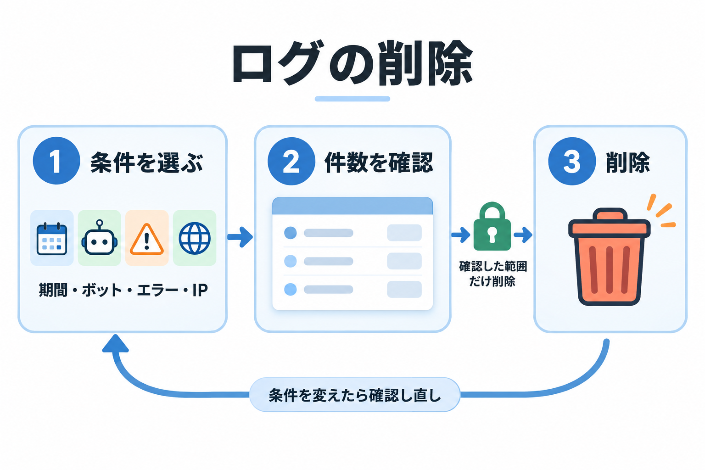
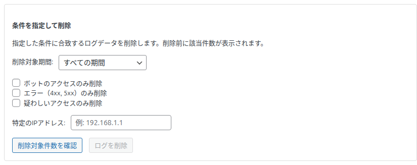
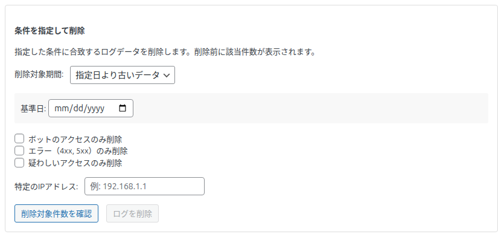
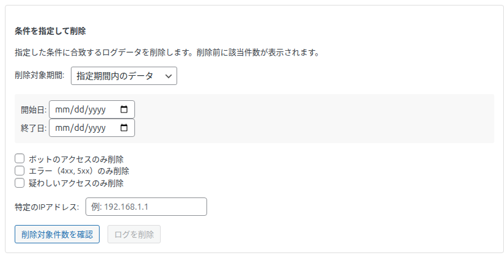
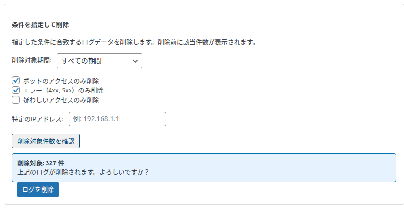
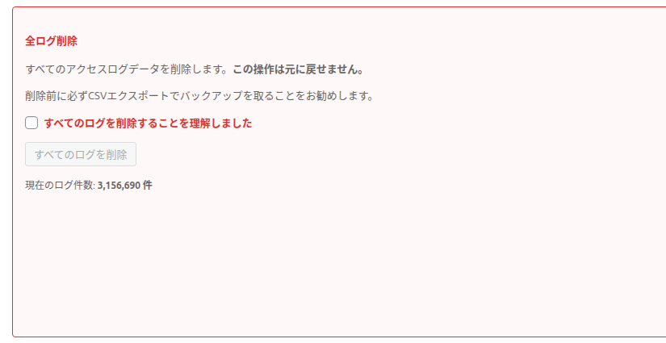

ログの削除
条件を指定してログを削除する方法と、すべてのログを削除する方法です。削除したログは元に戻せないので、手順と注意点をよく確認してください。

削除したログは元に戻せません。残しておきたいログは、先に「CSV エクスポート」で書き出してください。また、ログの保存形式を移し替えている途中は、削除の欄全体が操作できず「ログテーブルを新しい形式へ移行中のため、この操作は移行が終わるまで実行できません。」と表示されます。
自動クリーンアップがオフのときは「ログの保存期間が無期限になっています。設定で自動クリーンアップ（例: 180 日）を有効にすると、テーブルの肥大化による表示の遅さを防げます。」と案内が表示されます。→ 自動クリーンアップ
条件を指定して削除

条件の項目
| 項目（初期値） | 内容 |
|---|---|
| 削除対象期間（すべての期間） | 「すべての期間」: 期間で絞らない ／ 「指定日より古いデータ」: 「基準日」の欄が現れ、その日の 0 時より前のログが対象 ／ 「指定期間内のデータ」: 「開始日」「終了日」の欄が現れ、その 2 日を含む日単位の範囲が対象 |
| ボットのアクセスのみ削除（オフ） | ボットと判定したアクセスだけ |
| エラー（4xx, 5xx）のみ削除（オフ） | 応答の番号が 400 以上のアクセスだけ |
| 疑わしいアクセスのみ削除（オフ） | ページの URL に疑わしいキーワードを含むアクセスだけ（User-Agent は見ません） |
| 特定のIPアドレス（空） | その IP アドレスと完全に一致するアクセスだけ |
- 複数の条件を選ぶと、すべてに当てはまるログだけが対象です（例: 「ボットのみ」と「エラーのみ」→ ボットのエラーだけ）。
- 条件を何も選ばないと、すべてのログが対象になります。
- 日付は、WordPress の「一般設定」のタイムゾーンの 1 日として扱います（メインタブの表示タイムゾーンとは別です）。日付の形式が正しくないと「日付の形式が正しくありません (YYYY-MM-DD)。」と表示され、削除は行われません。


手順
条件を選びます。
「削除対象件数を確認」を押します。件数を少しずつ数え、ボタンに「確認中... N%」と進み具合が表示されます。
「削除対象: N 件 上記のログが削除されます。よろしいですか？」と表示されます。1 件以上あれば「ログを削除」が押せるようになります。
「ログを削除」を押し、「選択した条件に合致するログを削除します。この操作は元に戻せません。続行しますか？」に「OK」を押します。
「削除中... N% (M 件)」と進み、「✓ 削除完了! N 件のログを削除しました。」の後にページが開き直されます。

安全のためのしくみ
| しくみ | 内容 |
|---|---|
| 確認した範囲だけを削除 | 「削除対象件数を確認」を押した時点の条件と範囲で削除します。確認した後に記録された新しいログは消しません。 |
| 条件を変えたら確認し直し | 確認の後に条件を 1 つでも変えると、「ログを削除」は押せなくなり、件数の表示も消えます。もう一度「削除対象件数を確認」を押してください。 |
| 確認の前は押せない | 「ログを削除」は、件数を確認するまで押せません。確認せずに削除しようとすると「先に「削除対象件数を確認」を押してください。」と表示されます。 |
| ほかの処理と重ならない | インポートなど、ほかの大量の処理と同時には行いません。重なったときは「別の処理が実行中です。少し待ってから再度お試しください。」と表示されます。 |
全ログ削除

「すべてのログを削除することを理解しました」にチェックを入れます。下のボタンが押せるようになります。
「すべてのログを削除」を押し、「すべてのアクセスログを削除します。この操作は元に戻せません。本当に続行しますか？」に「OK」を押します。
「✓ 全削除完了! すべてのログを削除しました。」の後にページが開き直されます。ボタンの下に「現在のログ件数: N 件」が表示されています。
すべてのログと、グラフ用の集計もまとめて消えます。削除の前に、必要なら CSV でエクスポートしてください。削除に失敗したときは、ボタンが押せないままになります。ページを開き直してから、もう一度行ってください。